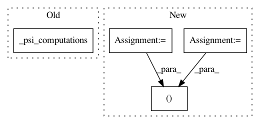

60e8f88b9bbefc02c953e73d31e621d95dbcae82,GPy/kern/_src/rbf.py,RBF,gradients_Z_expectations,#RBF#Any#Any#Any#Any#,87
Before Change
def gradients_Z_expectations(self, dL_dpsi1, dL_dpsi2, Z, variational_posterior):
mu = variational_posterior.mean
S = variational_posterior.variance
self._psi_computations(Z, mu, S)
l2 = self.lengthscale **2
//psi1
denominator = (l2 * (self._psi1_denom))
After Change
grad = np.sum(dL_dpsi1[:, :, None] * dpsi1_dZ, 0)
//psi2
denom, Zdist, Zdist_sq, mudist, mudist_sq, psi2 = self._psi2computations(Z, variational_posterior)
term1 = Zdist / l2 // M, M, Q
term2 = mudist / denom[:,None,None,:] / l2 // N, M, M, Q
dZ = psi2[:, :, :, None] * (term1[None, :, :, :] + term2) //N,M,M,Q
In pattern: SUPERPATTERN
Frequency: 3
Non-data size: 4
Instances
Project Name: SheffieldML/GPy
Commit Name: 60e8f88b9bbefc02c953e73d31e621d95dbcae82
Time: 2014-02-26
Author: james.hensman@gmail.com
File Name: GPy/kern/_src/rbf.py
Class Name: RBF
Method Name: gradients_Z_expectations
Project Name: SheffieldML/GPy
Commit Name: d8c2f7813159ab94d2187d293ccf5994f1d02c8d
Time: 2014-02-27
Author: z.dai@shef.ac.uk
File Name: GPy/kern/_src/ssrbf.py
Class Name: SSRBF
Method Name: psi1
Project Name: SheffieldML/GPy
Commit Name: 60e8f88b9bbefc02c953e73d31e621d95dbcae82
Time: 2014-02-26
Author: james.hensman@gmail.com
File Name: GPy/kern/_src/rbf.py
Class Name: RBF
Method Name: gradients_qX_expectations